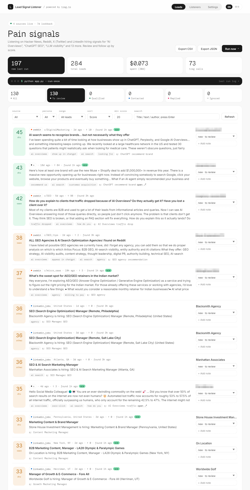
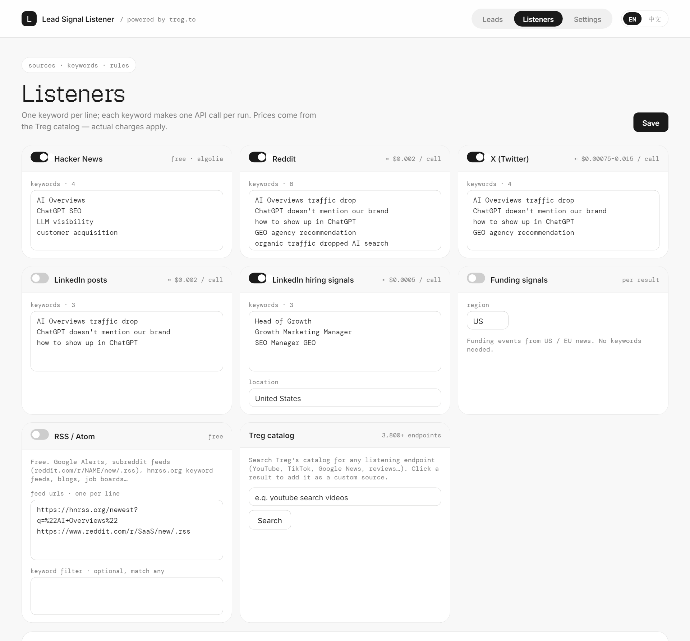

从一个想法到开源项目
这是 @yangyi 和 AI Agent 在 NewMax 里的一段真实对话：从「能不能做一个找潜在客户的监听服务」开始，用 treg.to 的 API 搭起本地服务，跑真实数据、改界面、做中英双语、写给 Agent 的初始化手册，最后开源发布到 GitHub。
The real, unedited chat log of building Lead Signal Listener with an AI agent in NewMax — from the first idea to a published open-source repo. The conversation is in Chinese.
32requests from the human
60messages
10+sources · plus RSS & any Treg API
$0.073first real run · 284 leads
已隐藏：API token、本机路径和附件截图。截图里的个人用户名已打码。
Secrets, local paths and attached screenshots are removed.


the conversation